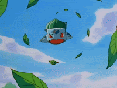

QUEM É ESSE POKÉMON?
APARÊNCIA:
Bulbassauro é um pequeno Pokémon anfíbio quadrúpede de pele azul-esverdeada com manchas mais escuras. Tem olhos vermelhos com pupilas brancas, orelhas pontiagudas no topo de sua cabeça e um focinho curto e rombudo acima de sua larga boca. Possui em cada uma de suas pernas grossas três garras afiadas. Nas costas de Bulbassauro há um grande bulbo de planta verde, que é cultivado a partir de uma semente plantada em seu nascimento. O bulbo também esconde duas videiras semelhantes a tentáculos.
ATAQUES:
Chicote de Vinha.
Das laterais do bulbo em suas costas, exatamente da barte inferior do mesmo, Bulbassaur aciona dois tentáculos que na verdade são dois cipós, de cor marrom, lisos e com as pontas arredondadas e levemente mais volumosas que o resto do cipó. Com estes cipós, ou vinhas, Bulbassaur pode atingir ou capturar seus adversários.
Folha Navalha
Da pequena abertura no topo do bulbo em suas costas, em alta velocidade, brotam folhas que voam em direção ao inimigo como projeteis. Estas folhas possuem propriedades cortantes como o próprio nome sugere. Cortantes como navalhas.
Dança de Pétalas
Ao abrir o bulbo em suas costas, o Pokémon dispera uma grande quantidade de Pétalas de cor rosada em direção do adversário.
Bomba de Semente.
Um disparo a partir da abertura no bulbo sobre suas costas, uma semente que funciona como um projetil. Vai em alta velocidade em direção ao seu alvo, possuindo capacidades explosivas, sendo acionada assim que toca em seu oponente.